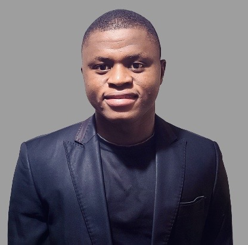

Tawfik Osman

I am a first year MSE student at the Arizona State University, mentored by Professor Ahmed Alkhateeb . I am currently a student researcher at Wireless Sensing, Learning, and Communication Laboratory.
Some of the technical course I have enrolled in are:
- Communication Systems (EEE 455/591)
- Digital Signal Processing (EEE 407/591)
- Digital Communication (EEE 552)
- Python for Rapid Engineering Solution including Machine learning (EEE 498/591)
- Digital Circuit Design with Cadence (EEE 425)
- Communication Networks (EEE 459/591)
- Randon Signal Theory (EEE 554)
My research interests include (but are not limited to!):
- Machine Learning in Wireless Communication
- Vision-Aided Models for Beam training
- Wireless Communication Channnel estimation and modelling
In my spare time I enjoy playing Soccer matches, watching comedy, and watching YouTube channels Documentary.
Recent Papers
To be updated ......
* indicates equal contribution.
Thanks to Jack Turner for the website template.
To be updated ......
* indicates equal contribution.